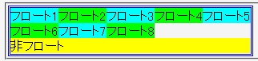

幅が明示されていないフロートを連続して配置すると親要素の幅を無視して回り込み、横一列に並んでしまう。
<div style="width:300px; border:3px double blue;"> <div style="float:left; background:aqua;">フロート1</div> <div style="float:left; background:lime;">フロート2</div> …… <div style="float:left; background:lime;">フロート8</div> <div style="clear:left; background:yellow;">非フロート</div> </div>
親要素の幅を制限し、その内部に幅を明示しないフロートを配置しています。本来は、親要素をはみ出さないように折り返されるはずです。
※CSS仕様では、このフロート指定は誤っています。フロートには、必ず幅を明示してください。
Moz1.0.1での表示
Opera6.05での表示
幅を明示したフロートの場合は正しく折り返されます。
<div style="width:300px; border:3px double blue;"> <div style="float:left; background:aqua; width:5em;">フロート1</div> <div style="float:left; background:lime; width:5em;">フロート2</div> …… <div style="float:left; background:lime; width:5em;">フロート8</div> <div style="clear:left; background:yellow;">非フロート</div> </div>
Opera6.05では不具合の発生が確認されました。Opera7.0では標準・互換モードともに不具合の発生は確認されませんでした。